Flametree provides a system for making generative art in R, written with two goals in mind. First, and perhaps foremost, art is inherently enjoyable and generative artists working in R need packages no less than any other R users. Second, the system is designed to be useful in the classroom: getting students to make artwork in class is an enjoyable exercise and flametree can be used as a method to introduce some key R concepts in a fun way. This article will help you get started with the package.
The flametree system has two main components: the
flametree_grow() function generates a tidy tibble that
specifies a suitable data structure, and the
flametree_plot() function takes this tibble and creates
plots using ggplot2. First we look at the data structure:
flametree_grow()
#> # A tibble: 381 × 12
#> coord_x coord_y id_tree id_time id_path id_leaf id_pathtree id_step seg_deg
#> <dbl> <dbl> <int> <int> <int> <lgl> <chr> <int> <dbl>
#> 1 1.48 0 1 1 1 FALSE 1_1 0 90
#> 2 1.48 0.5 1 1 1 FALSE 1_1 1 90
#> 3 1.48 1 1 1 1 FALSE 1_1 2 90
#> 4 1.48 1 1 2 2 FALSE 1_2 0 80
#> 5 1.48 1.3 1 2 2 FALSE 1_2 1 80
#> 6 1.59 1.59 1 2 2 FALSE 1_2 2 80
#> 7 1.48 1 1 2 3 FALSE 1_3 0 110
#> 8 1.48 1.4 1 2 3 FALSE 1_3 1 110
#> 9 1.21 1.75 1 2 3 FALSE 1_3 2 110
#> 10 1.59 1.59 1 3 4 FALSE 1_4 0 70
#> # ℹ 371 more rows
#> # ℹ 3 more variables: seg_len <dbl>, seg_col <dbl>, seg_wid <dbl>Segments are arranged so that when plotted, the overall image looks a little like a tree:
flametree_grow() |> flametree_plot()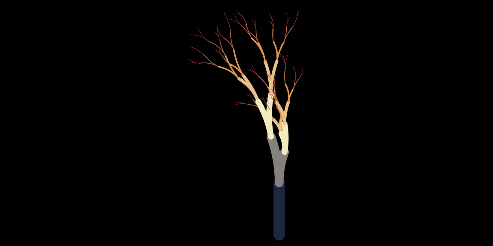
The output of flametree_grow() is always a tibble with
the same 12 columns. Each row specifies the location of a point in the
coord_x and coord_y values, and it takes three
such points to define a curved line segment. The two “coord” columns are
numeric variables that specify the location of the point itself. The
“id” columns are used as indicators of various kinds. The
id_tree column contains numbers specifying which tree each
point belongs to, and similarly the id_time column is a
numeric identifier that specifies the time point at which the point was
generated. The id_step column contains a number (0, 1, or
2) indicating whether the point is the first point, the midpoint, or the
end point of the relevant curved segment in a tree. In addition, there
are two identifier columns used to denote the segments themselves. The
id_path column is numeric, and assigns value 1 to the
“first” segment (i.e., the lowest part of the tree trunk) for every
tree, with values increasing numerically for each subsequent segment.
Values for id_path will uniquely identify a segment within
a tree, but when multiple trees are generated there will be multiple
segments that have the same id_path value. If a unique
identifier across trees is needed, use the id_pathtree
column, which is a character vector constructed by pasting the
id_path and id_tree values into a string, with
an underscore as the separator character.
In addition to the two coordinate columns and the six identifier
columns, the data generated by flametree_grow() contains
four “seg” columns that are intended to map onto different visual
characteristics of a plot. The seg_deg column specifies the
orientation of the segment, whereas seg_len denotes the
length of the segment, seg_col specifies the colour as a
numeric value, and seg_wid specifies the width of the
segment. Note that this information use used differently by the
flametree_plot() function, depending on what style of plot
is generated.
Customising the generative process
Several arguments to flametree_grow() function allow you
to control the behaviour of the generative process. By setting the
seed argument the random number generator is reset. None of
the structural features of the generative process change, but you get a
different random outcome of the “same” process:
flametree_grow(seed = 1) |> flametree_plot()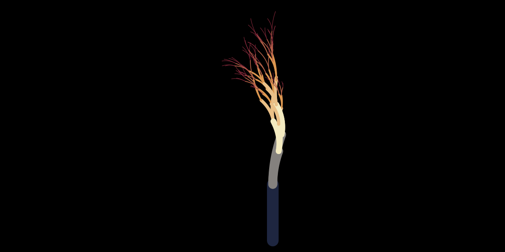
flametree_grow(seed = 2) |> flametree_plot()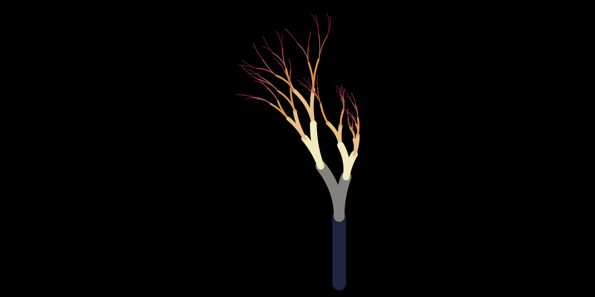
In contrast, the trees and time arguments
can be used to change the number of distinct trees generated and the
number of iterations over which the branching process will be run:
flametree_grow(trees = 6) |> flametree_plot()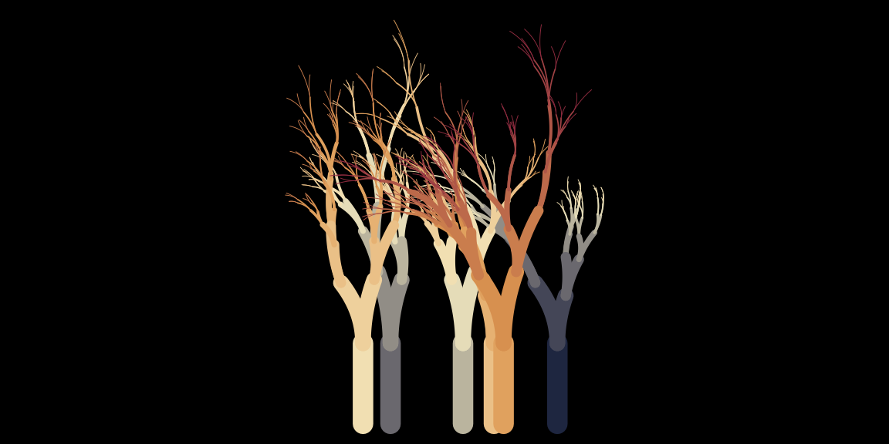
flametree_grow(time = 10) |> flametree_plot()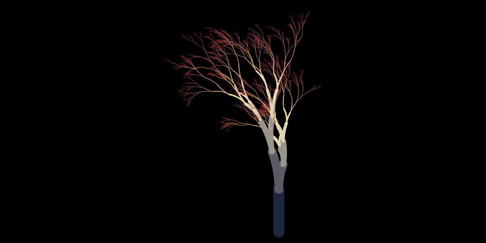
flametree_grow(trees = 3, time = 10) |> flametree_plot()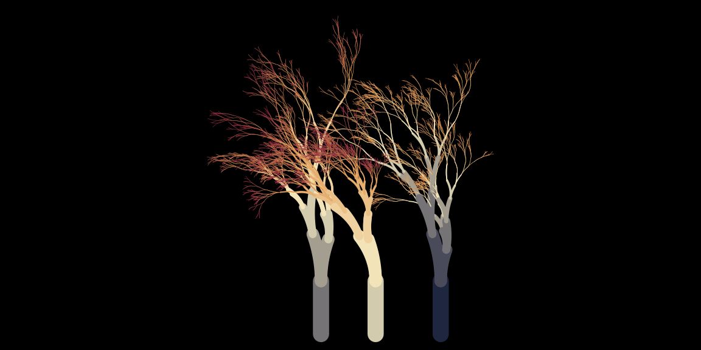
You can also control how the length and orientation of the branches
change, using the scale and angle arguments
respectively. The scale argument takes a vector of positive numbers as
input. One of these numbers is selected at random whenever a new segment
is created, and the length of the new segment is equal to the length of
the “parent” segment from which it was created, multiplied by this
scaling factor:
flametree_grow(scale = c(.5, .8, 1.1)) |> flametree_plot()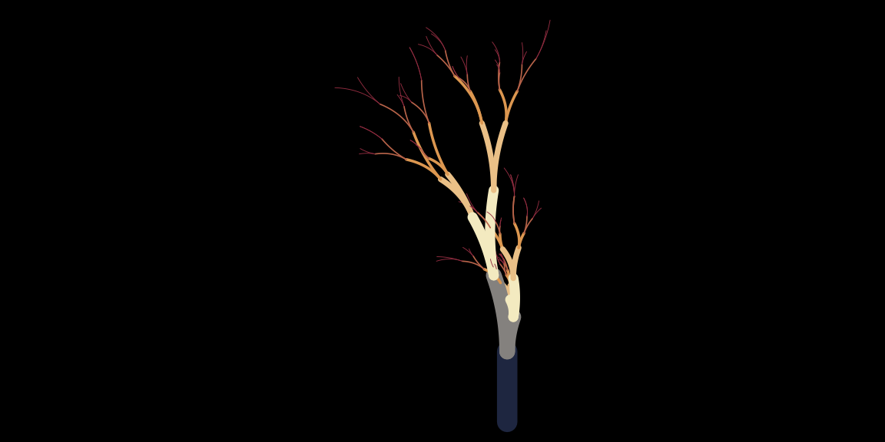
flametree_grow(scale = c(.8, .9)) |> flametree_plot()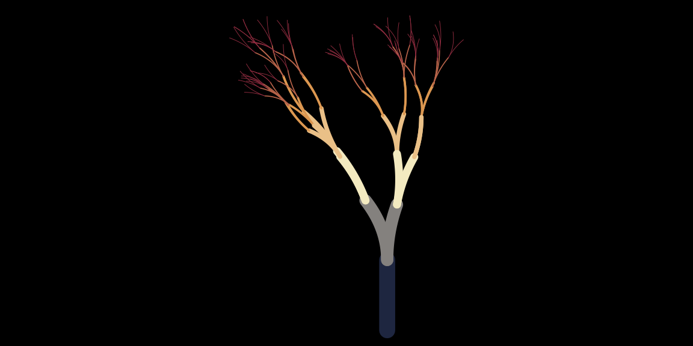
The orientation of the new segment is controlled by the
angle argument in an analogous way. Every time a new
segment is generated, one of these angles is selected at random. Note
that the values in angle are interpreted as degrees, not
radians. The orientation of the new segment is equal to the orientation
of the parent segment plus the sampled angle:
flametree_grow(angle = c(-20, 5, 10)) |> flametree_plot()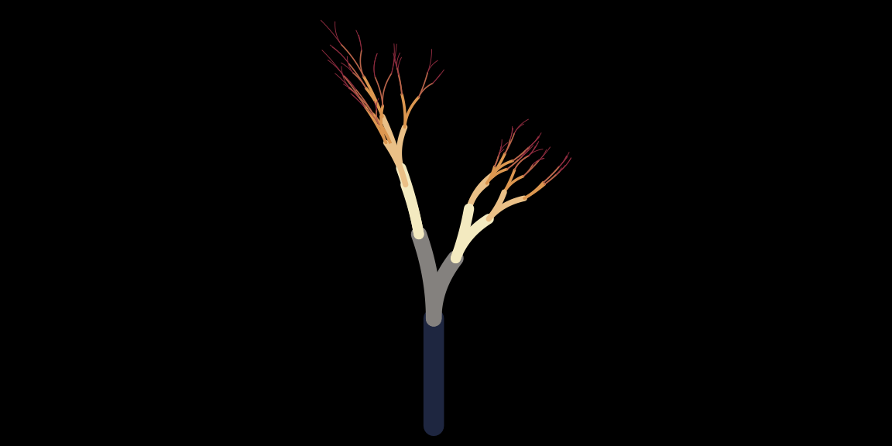
flametree_grow(angle = -10:10) |> flametree_plot()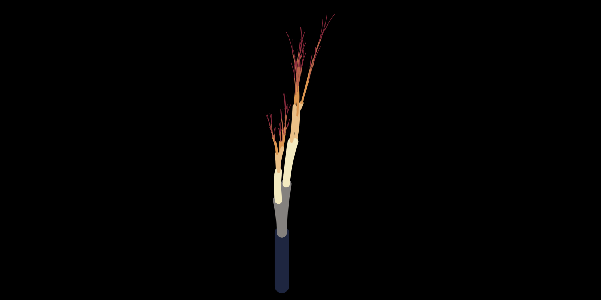
The other arguments to flametree_grow() allow slightly
more fine-grained control over the generative process, discussed in the
article on spark
functions.
Customising the plot
The options described in the previous section all modify the data
structure produced by flametree_grow(). You can also modify
how the plot function assigns colours. There are two arguments that you
can use for this. The background argument, unsurprisingly,
sets the background colour to the plot. Of more interest is the
palette argument, which takes a vector of colours as
input:
# use hex codes to set colours
# https://www.canva.com/colors/color-palettes/arts-and-crafts/
flametree_grow(time = 10) |>
flametree_plot(
palette = c(
"#A06AB4", # lavender
"#FFD743", # gold
"#07BB9C", # blue green
"#D773A2" # lilac
)
)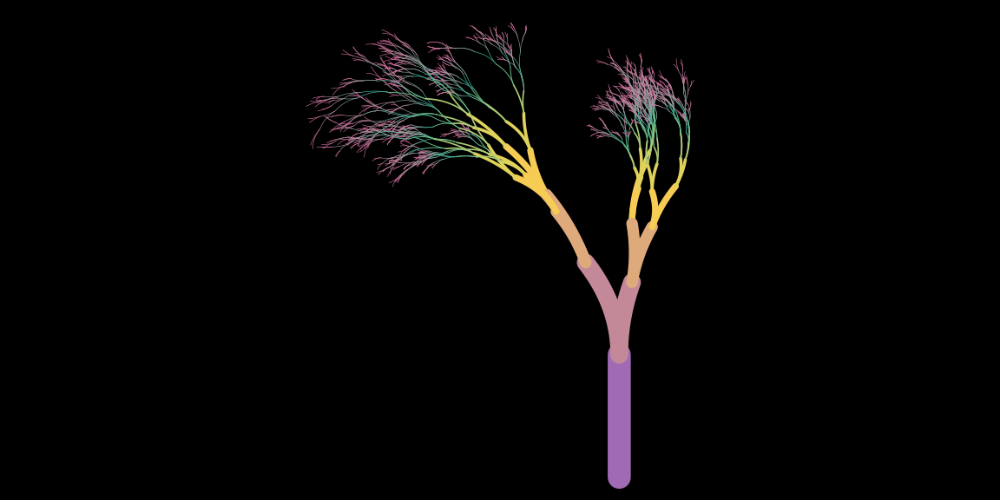
# use colour names that R recognises
flametree_grow(time = 10) |>
flametree_plot(
palette = c(
"antiquewhite",
"antiquewhite4",
"hotpink2",
"hotpink4"
)
)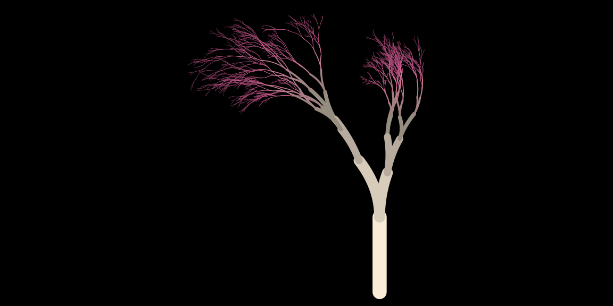